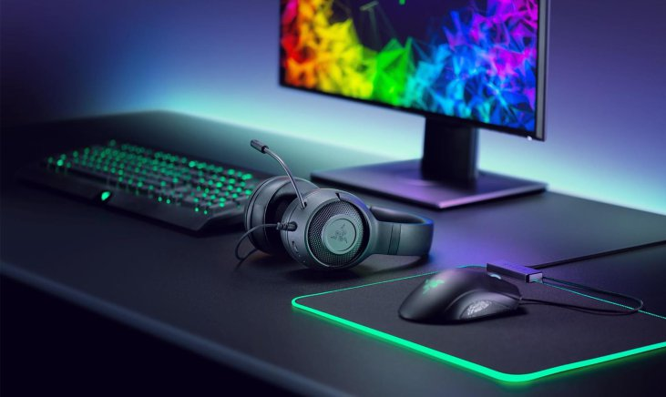

Mijn hobby's en interesses
Op deze pagina vertel ik over wat ik graag doe in mijn vrije tijd. Mijn grootste hobby is gamen. Vroeger deed ik ook veel aan beweging en sport. Daarnaast ben ik erg geïnteresseerd in de ruimte.
Gamen

Gamen is mijn grootste hobby. Ik speel bijna elke dag en ik vind het een leuke manier om te ontspannen na school. Ik speel graag games waarin je moet samenwerken met andere spelers. Je moet dan goed communiceren, snel beslissingen nemen en een plan maken met je team. Dat zijn dingen die je ook buiten het gamen goed kan gebruiken.
Wat ik ook leuk vind aan gamen, is dat je altijd beter kan worden. Als ik een potje verlies, probeer ik te zien wat er fout ging zodat ik het de volgende keer beter doe. Zo leer ik doorzetten en niet meteen op te geven. Ik speel ook vaak samen met vrienden online. Zo blijven we contact houden, ook als we elkaar niet elke dag zien.
Ik vind het ook interessant hoe games gemaakt worden. Er komt veel bij kijken: programmeren, tekenen, muziek en verhalen schrijven. Misschien wil ik later zelf iets doen in de wereld van games of technologie.
Wat ik leuk vind aan gamen
- Samenspelen met vrienden
- Beter worden door te oefenen
- Ontspannen na een lange dag
- Nieuwe werelden ontdekken
Beweging en sport
Vroeger deed ik veel aan beweging en sport. Sporten is goed voor je lichaam, maar ook voor je hoofd. Na het sporten voelde ik me altijd fris en had ik meer energie. Ik heb door sport geleerd hoe belangrijk het is om in een team te werken, naar elkaar te luisteren en elkaar te helpen.
Tegenwoordig game ik meer dan dat ik sport, maar ik weet nog altijd dat bewegen belangrijk is. Daarom probeer ik toch genoeg te bewegen, bijvoorbeeld door te wandelen of te fietsen. Een goede balans tussen gamen en bewegen is voor mij belangrijk.
De ruimte
Naast gamen ben ik ook erg geïnteresseerd in de ruimte. Ik vind het fascinerend hoe groot het heelal is en hoeveel we er nog niet van weten. Als je 's nachts naar de sterren kijkt, besef je pas hoe klein de aarde eigenlijk is. Er zijn miljarden sterren en planeten, en misschien is er ergens ander leven.
Ik kijk graag filmpjes en documentaires over planeten, zwarte gaten en raketten. Het is ook leuk om te volgen hoe mensen proberen om terug naar de maan te gaan en later misschien naar Mars. Ik vind het knap hoeveel technologie daarvoor nodig is.
Gamen en de ruimte samen
Het leuke is dat mijn twee interesses soms samenkomen. Er bestaan veel games die zich afspelen in de ruimte. Daarin kan je zelf met een ruimteschip vliegen, planeten ontdekken of een basis bouwen op een andere planeet. Zo kan ik twee dingen die ik leuk vind combineren.
| Hobby / interesse | Hoe vaak | Waarom |
|---|---|---|
| Gamen | Bijna elke dag | Ontspannen en samenspelen met vrienden |
| Beweging en sport | Vroeger vaak, nu minder | Gezond blijven en energie krijgen |
| De ruimte | Regelmatig | Het heelal is fascinerend |